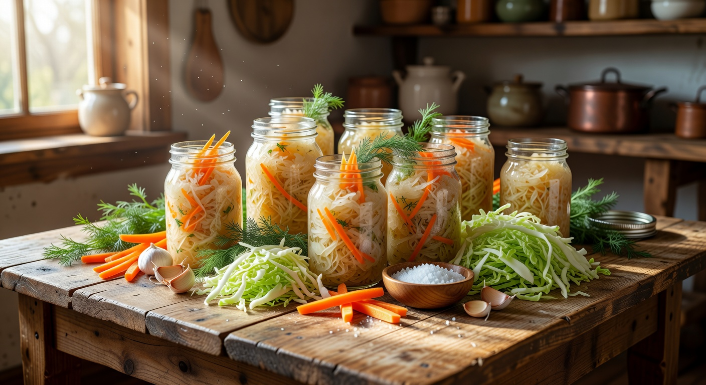
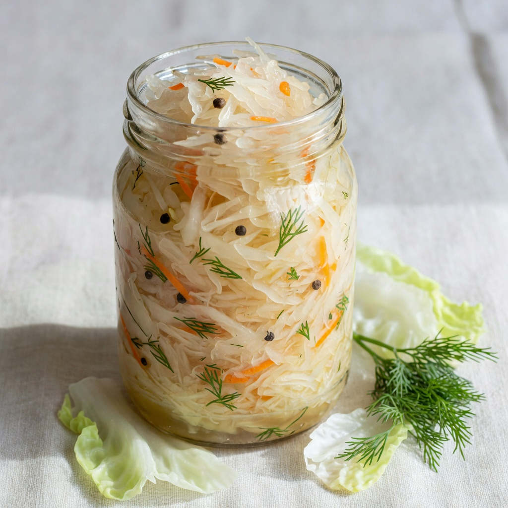
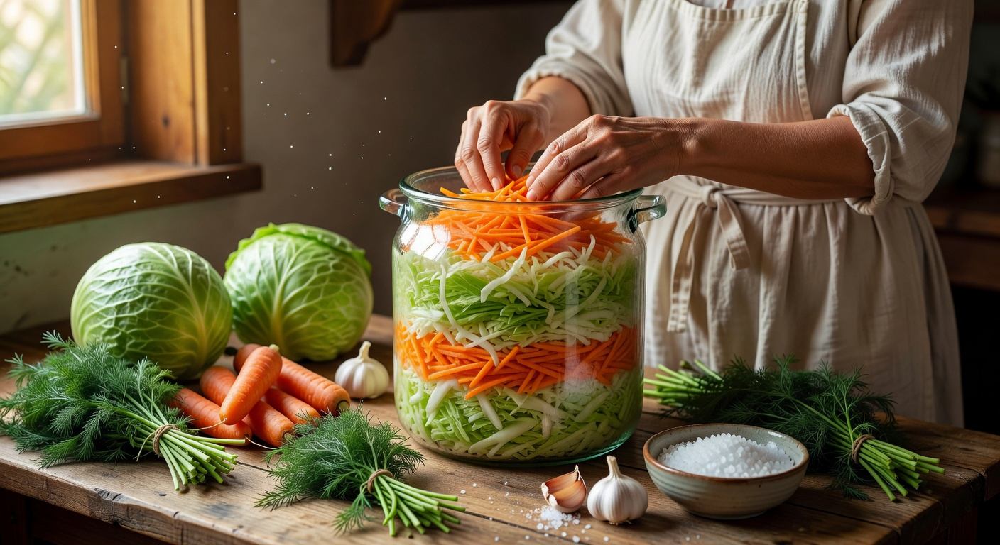
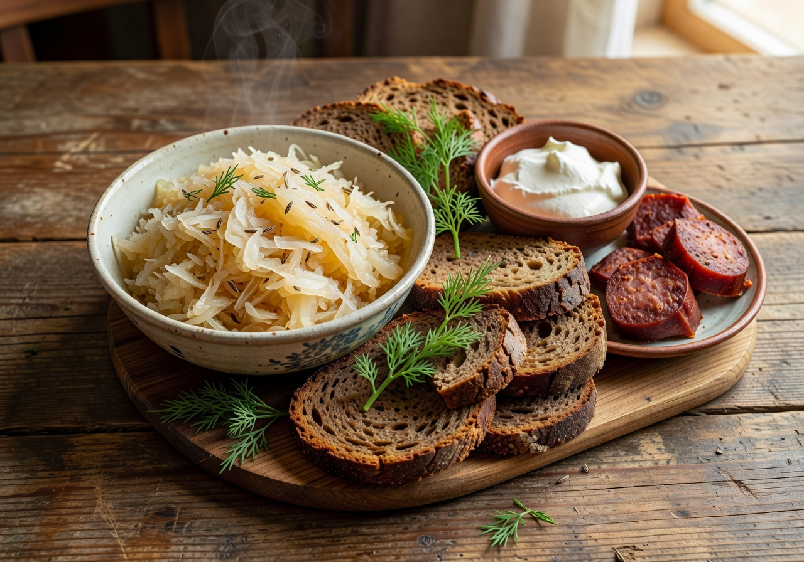

Traditional Russian-style sauerkraut,
made with patience and care.
Naturally fermented in small batches using time-honored methods. Texas direct sales only.
Soursprout comes from a family recipe for traditional-style sauerkraut—the kind made with cabbage, salt, and time. It was passed down to us through family who fermented this way before immigrating to the U.S. in the early 1990s.
We still make it the same simple way: no vinegar, no shortcuts. Each small batch is packed by hand and fermented just long enough to turn bright and savory while keeping a real crunch.
Classic is cabbage, carrots, and salt. No vinegar. No preservatives.
We ferment for 72–96 hours—long enough for bright, savory flavor, short enough to keep a crisp crunch.
Every jar is packed and sealed by us. Small batches mean every jar gets the attention it deserves.
Our Classic kraut—cabbage, carrots, and salt—made with care and traditional Russian technique.

The original Russian favorite. Finely shredded cabbage and carrots with salt. Bright, crunchy, and deeply savory. First sell path: 16 oz jars.
Commercial sauerkraut is often pasteurized or made with vinegar. Ours is fermented with salt alone for 72–96 hours—bright and savory, with a crisp crunch that longer ferments often lose.
Tell us what you’d like and your delivery city (Plano, Frisco, Allen, McKinney, and Richardson). We’ll reply within 1–2 days with availability and arrange in-person delivery. No shipping. No home pickup.
Soursprout — Russian-Style Sauerkraut (Classic)
Ingredients: Cabbage, carrots, salt.
Net contents: 16 oz (454 g)
Batch number: shown on each jar (format YYYYMMDD-SK-##). Pack / production date: printed on the jar label.
THIS PRODUCT WAS PRODUCED IN A PRIVATE RESIDENCE THAT IS NOT SUBJECT TO GOVERNMENTAL LICENSING OR INSPECTION.
Producer: Soursprout · DSHS Cottage Food Registry #14300 · Texas direct sales only
SAFE HANDLING INSTRUCTIONS: To prevent illness from bacteria, keep this food refrigerated or frozen until the food is prepared for consumption.
Currently offering Classic only. Same producer ID, disclosure, and safe-handling rules apply to every jar.


Photos are brand imagery for Classic. Real batch photos can replace these anytime.
Your inquiry has been prepared. We’ll be in touch within 1–2 days.